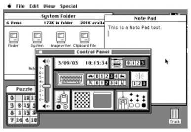
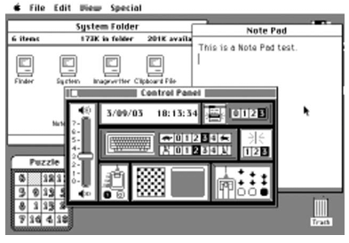
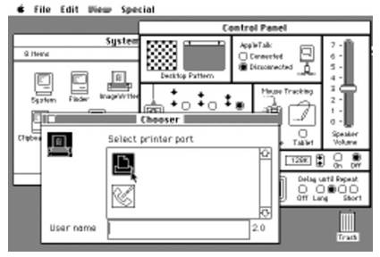
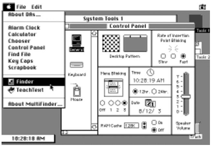
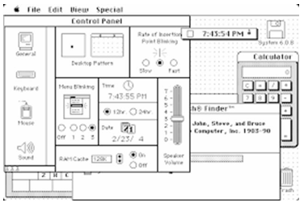
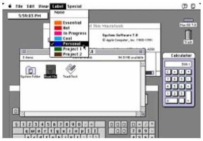
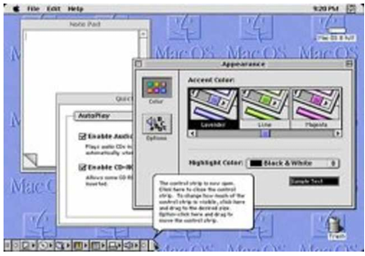
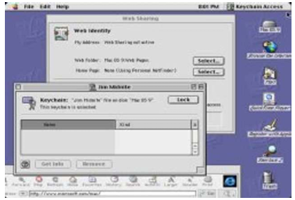
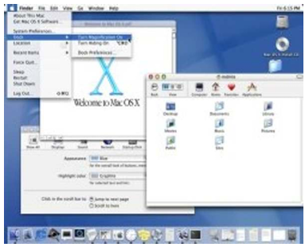
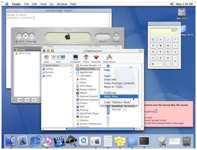

| Sistem 1 |
1.0 |
No aplica |
1984 |
Motorola 6800 |
8 Mhz. |
16 bits con una arquitectura interna de 32 bits. |
1 hilo |
Estandar |
128 KB |
No Aplica |
Primera versión del Macintosh con interfaz gráfica de usuario (GUI), Incorporación del Motorola 68000
como procesador Y Ram de 128KB sin frecuencia como las modernas.
|
Primera interfaz gráfica de usuario en una computadora personal, con ventanas, iconos y menús,
No soportaba multitarea; sólo un programa podía estar activo a la vez Y Incluía el Finder, que permitía
al usuario gestionar archivos y aplicaciones a través de una interfaz gráfica.
|

|
| Sistem 2 |
2.0 |
No aplica |
1985 |
Motorola 6800 |
8 Mhz. |
16 bits con una arquitectura interna de 32 bits. |
1 hilo |
Estandar |
1 MB (1024 KB) - Con la capacidad de expandirse hasta 4 MB |
No Aplica |
No hubo cambios significativos en el hardware comparado con System 1. Los Macintosh de esa época
seguían usando el Motorola 68000 a 8 MHz - Su unico cambio fue en su memoria ram
|
Mejoras en la interfaz gráfica de usuario y soporte para nuevas aplicaciones.
Introducción de nuevas funciones y mejoras en el Finder.
Mejoras en la gestión de archivos y el sistema de iconos.
Soporte ampliado para aplicaciones en términos de funcionalidad y estabilidad.
|

|
| Sistem 3 |
3.0 |
No aplica |
1985 |
Motorola 6800 |
8 Mhz. |
16 bits con una arquitectura interna de 32 bits. |
1 hilo |
Estandar |
1 MB (1024 KB) - Con la capacidad de expandirse hasta 4 MB |
No Aplica |
No hubo cambios significativos en el hardware del Macintosh relacionado específicamente con System 3.
Los Macintosh seguían utilizando el procesador Motorola 68000 a 8 MHz y su memoria ram era la misma
del system 2
|
Introducción de un nuevo sistema de ventanas, que mejoró la gestión de la interfaz gráfica.
Implementación de mejoras en el Finder, proporcionando una experiencia de usuario más fluida.
Introducción del concepto de "folders" o carpetas, lo que facilitó la organización de archivos.
Mejoras en la gestión de impresoras y la impresión desde aplicaciones.
Incorporación de nuevas características para aplicaciones, facilitando la integración de software adicional.
|

|
| Sistem 4 |
4.0 |
No aplica |
1987 |
Motorola 6800 |
8 Mhz. |
16 bits con una arquitectura interna de 32 bits. |
1 hilo |
Estandar |
Macintosh SE: 512 KB - Capacidad Máxima4 MB
Macintosh Plus:
1 MB - Capacidad Máxima: 4 MB
|
No Aplica |
No se introdujo hardware nuevo específico para System 4. Los Macintosh que ejecutaban System 4
seguían utilizando el procesador Motorola 68000 a 8 MHz, sin cambios significativos en el hardware.
|
Introducción de soporte para nuevas configuraciones de Macintosh, incluyendo modelos como el Macintosh SE y el Macintosh Plus.
Mejoras en el Finder, incluyendo una interfaz más refinada y mejoras en la funcionalidad de gestión de archivos.
Mejoras en la gestión de impresoras y opciones de impresión.
Incorporación de soporte para aplicaciones más avanzadas, proporcionando una experiencia de usuario más rica.
Introducción de nuevas características en el sistema de ventanas, facilitando una mejor organización y manejo de las aplicaciones abiertas.
|

|
| Sistem 6 |
6.0 |
No aplica |
1988 |
Motorola 6800 |
Macintosh SE y Macintosh - 8 MHz
Macintosh II - 16 MHz
|
16 bits con una arquitectura interna de 32 bits. |
1 hilo |
Estandar |
Macintosh SE y Macintosh : 1 MB - Capacidad Máxima 4 MB
Macintosh II: 1 MB - Capacidad Máxima 8 MB
|
No Aplica |
Los Macintosh que ejecutaban System 6 seguían utilizando el procesador Motorola 68000 a 8 MHz y capacidad maxima
de ram de 1 MB a 8 MB maximo
|
Introducción del soporte para el "MultiFinder," que permitía una forma básica de multitarea cooperativa, permitiendo a los usuarios ejecutar múltiples aplicaciones simultáneamente (aunque con limitaciones).
Mejoras en el Finder, incluyendo un soporte mejorado para la organización de archivos y carpetas, así como una interfaz más eficiente y amigable.
Introducción de un sistema de administración de memoria mejorado, proporcionando una mejor gestión de la memoria del sistema.
Soporte para nuevos dispositivos periféricos y mejoras en la impresión y la conectividad.
Incorporación de herramientas y utilidades adicionales, como el "Chooser" para la selección de impresoras y otros dispositivos.
|

|
| Sistem 7 |
7.0 (con actualizaciones posteriores como 7.1, 7.5, 7.6) |
No aplica |
1991 |
Motorola 68000, Motorola 68020, Motorola 68030, y Motorola 68040 (dependiendo del modelo de Macintosh) |
8 MHz, 16 MHz, 20 MHz, o 25 MHz (dependiendo del modelo de Macintosh) |
16-bit (para los modelos basados en 68000 y 68020) y 32-bit (para los modelos basados en 68030 y 68040) |
1 hilo |
Estandar |
Macintosh Classic II:
Memoria Estándar: 1 MB
Capacidad Máxima: 10 MB
Macintosh IIsi:
Memoria Estándar: 1 MB
Capacidad Máxima: 20 MB
Macintosh LC:
Memoria Estándar: 2 MB
Capacidad Máxima: 10 MB
Macintosh Quadra:
Memoria Estándar: 4 MB
Capacidad Máxima: 128 MB
|
60 MHz a 100 MHz. |
Compatibilidad con nuevos modelos de Macintosh:
Macintosh LC, Macintosh Quadra, Macintosh IIsi, y PowerBook.
Soporte para procesadores más avanzados:
Compatibilidad con el Motorola 68030 y el Motorola 68040 en modelos más recientes - Ademas con mejoras en el procesador y memoria ram con su respectiva freceuncia |
Multitarea Mejorada:
Integración del MultiFinder para la multitarea cooperativa, permitiendo ejecutar múltiples aplicaciones simultáneamente de manera más eficiente.
Mejoras en la Interfaz Gráfica:
Nueva apariencia más moderna con mejoras en la gestión de ventanas, iconos, y controles.
Soporte para Memoria Virtual:
Permite utilizar la memoria virtual para aplicaciones más grandes y una gestión más eficiente de la RAM.
Mejoras en el Finder:
Mejoras en la administración de archivos y carpetas, incluyendo una interfaz de usuario más intuitiva y características adicionales para la búsqueda y organización de documentos.
Control Panel:
Introducción del "Control Panel" para una configuración más centralizada y fácil de los ajustes del sistema.
AppleScript:
Introducción de AppleScript para la automatización de tareas y la creación de scripts personalizados para automatizar procesos repetitivos.
Compatibilidad con Nuevas Aplicaciones:
Mayor compatibilidad con una gama más amplia de aplicaciones de terceros y una mayor disponibilidad de software para el sistema.
|

|
| Mac OS 8 |
8.0 (con actualizaciones posteriores como 8.1, 8.5, 8.6) |
No aplicable (El concepto de kernel tal como se entiende hoy no estaba claramente definido; se basa en el kernel de Macintosh tradicional.) |
1997 |
Motorola 68040, PowerPC 601, PowerPC 603, PowerPC 604 (dependiendo del modelo de Macintosh) |
20 MHz, 25 MHz, 33 MHz, 40 MHz, o 60 MHz (dependiendo del modelo de Macintosh) |
32-bit (para modelos basados en PowerPC) |
1 hilo |
SIMM (Single Inline Memory Module) y DIMM (Dual Inline Memory Module) |
Macintosh PowerBook 3400: hasta 64 MB.
Macintosh Power Mac 9600: hasta 1 GB (con módulos adicionales y expansiones)
|
La RAM en ese período operaba a frecuencias de 60 MHz a 100 MHz. |
Compatibilidad con nuevos modelos de Macintosh:
Power Mac G3, PowerBook G3, iMac G3.
Mejor soporte para procesadores PowerPC:
Aprovechamiento de la arquitectura PowerPC para un mejor rendimiento y eficiencia en comparación con los procesadores Motorola 680x0.
Soporte para nuevas tecnologías de conectividad:
Mejora en el soporte para puertos USB y otros periféricos de hardware
|
Interfaz Gráfica Modernizada:
Introducción del "Platinum" appearance, que modernizó la interfaz gráfica con una apariencia más pulida y moderna.
Mejoras en la Multitarea:
Avances en la gestión de la multitarea cooperativa y mejoras en la estabilidad del sistema.
Mejoras en el Finder:
Nuevas características en el Finder, incluyendo una mejor visualización y administración de archivos y carpetas.
Soporte para Extensiones y Controladores:
Expansión en el soporte para extensiones del sistema y controladores, facilitando la integración de hardware adicional y nuevas funcionalidades.
Características de Personalización:
Nuevas opciones para personalizar la apariencia y el comportamiento del sistema, incluyendo temas y configuraciones del escritorio.
Mejoras en la Administración de Memoria:
Optimización en el manejo de la memoria para aplicaciones más grandes y una mejor eficiencia general del sistema.
Integración con Internet:
Mejora en el soporte para conexiones de red e Internet, con una integración más fluida de aplicaciones de red y servicios en línea.
|

|
| Mac OS 9 |
9.0 (con actualizaciones posteriores como 9.1, 9.2, y 9.2.2) |
Mac OS 9 no utiliza el núcleo XNU, ya que XNU es específico de las versiones de Mac OS X (desde Mac OS X 10.0 en adelante). En lugar de eso, Mac OS 9 se basa en una arquitectura completamente diferente, que es parte del sistema operativo clásico de Macintosh. |
1999 |
PowerPC G3, PowerPC G4 (dependiendo del modelo de Macintosh) |
233 MHz, 266 MHz, 300 MHz, 350 MHz, 400 MHz, 500 MHz, 550 MHz (dependiendo del modelo de Macintosh) |
32-bit (para modelos PowerPC G3 y G4) |
1 hilo |
DIMM (Dual Inline Memory Module) |
iMac G3: hasta 256 MB
Power Mac G4: hasta 1.5 GB (en modelos con expansión máxima)
PowerBook G3: hasta 512 MB
|
La RAM en ese período operaba a frecuencias de 60 MHz a 100 MHz. |
Compatibilidad con nuevos modelos de Macintosh:
iMac G3, Power Mac G4, PowerBook G3, PowerBook G4.
Soporte para procesadores PowerPC G4:
Mejoras en el rendimiento con los procesadores PowerPC G4, incluyendo el uso de AltiVec (SSE) para procesamiento vectorial.
Mejoras en la conectividad:
Soporte para tecnologías emergentes como USB y FireWire.
|
Mejoras en la Multitarea:
Introducción del "Application Switcher" que facilitaba el cambio entre aplicaciones abiertas y mejoraba la experiencia de multitarea.
Mejoras en el Finder:
Nuevas características como el "Column View" (vista de columnas) para una mejor navegación y administración de archivos.
Soporte para Red y Conectividad:
Mejoras en el soporte para redes y servicios de Internet, incluyendo soporte para compartir archivos y conexiones de red más avanzadas.
Mejoras en la Administración de Archivos:
Introducción de características como el "Disk Copy" para una mejor gestión de discos y volúmenes.
Características de Personalización:
Mayor capacidad para personalizar el sistema con opciones mejoradas para la apariencia y la configuración del escritorio.
Soporte para AppleScript y Automatización:
Expansión en las capacidades de AppleScript para la automatización de tareas y la creación de scripts más complejos.
Introducción de Sherlock:
Una herramienta para la búsqueda de archivos en el sistema y en la web, proporcionando una experiencia de búsqueda más integrada.
|

|
| Mac OS X 10.0 "Cheetah" |
10.0 |
Versión del Kernel XNU: 4.0.1 |
2001 |
PowerPC G3, PowerPC G4, PowerPC G5 (aunque el soporte inicial fue principalmente para G3 y G4) |
233 MHz, 266 MHz, 300 MHz, 350 MHz, 400 MHz, 500 MHz, 550 MHz (dependiendo del modelo de Macintosh) |
32-bit (PowerPC G3 y G4) |
1 hilo |
DIMM (Dual Inline Memory Module) |
Power Mac G4: hasta 1.5 GB
iMac G3: hasta 256 MB
PowerBook G4: hasta 512 MB
|
La RAM en ese período operaba a frecuencias de 60 MHz a 100 MHz. |
Compatibilidad con nuevos modelos de Macintosh:
Power Mac G4, iMac G3, PowerBook G4.
Soporte para arquitectura PowerPC:
Uso del procesador PowerPC para un mejor rendimiento en comparación con el hardware basado en Motorola 680x0.
|
Nuevo Núcleo y Arquitectura:
Introducción del núcleo XNU, que combina Mach y componentes de BSD, proporcionando una base sólida para el sistema operativo.
Interfaz Aqua:
Interfaz gráfica Aqua, con una apariencia moderna y características como ventanas translúcidas, efectos de transparencia, y una experiencia visual refrescante.
Compatibilidad con Aplicaciones:
Soporte limitado para aplicaciones antiguas de Mac OS clásico a través del "Classic Environment".
Sistema de Archivos:
Introducción del sistema de archivos HFS+ (Hierarchical File System Plus), que mejoró la gestión de archivos y directorios.
Multitarea:
Soporte para multitarea preemptiva, permitiendo una ejecución más eficiente de múltiples aplicaciones.
Nuevas Herramientas y Utilidades:
Introducción de herramientas y utilidades modernas como el Finder actualizado, Dock para el acceso rápido a aplicaciones, y nuevas utilidades de red y administración de archivos.
|

|
| Mac OS X10.1 “Puma” |
10.1 |
Versión del Kernel XNU: 5.2.0 |
2001 |
PowerPC G3, PowerPC G4 |
233 MHz, 266 MHz, 300 MHz, 350 MHz, 400 MHz, 500 MHz (dependiendo del modelo de Macintosh) |
32-bit (PowerPC G3 y G4) |
1 hilo |
DIMM (Dual Inline Memory Module) |
Power Mac G4: hasta 1.5 GB
iMac G3: hasta 512 MB
PowerBook G4: hasta 1 GB
|
La RAM en ese período operaba a frecuencias de 60 MHz a 100 MHz. |
Compatibilidad con nuevos modelos de Macintosh:
Power Mac G4, iMac G3, PowerBook G4.
Soporte mejorado para hardware existente:
Continuación del soporte para procesadores PowerPC G3 y G4, con mejoras en la compatibilidad y el rendimiento de hardware.
|
Soporte Ampliado para Aplicaciones:
Mejora en la compatibilidad con aplicaciones y el entorno Classic para ejecutar aplicaciones de Mac OS 9.
Introducción de Nuevas Aplicaciones y Herramientas:
Nuevas herramientas y utilidades para la administración del sistema y la conectividad, incluyendo mejoras en el acceso a redes y dispositivos periféricos.
Actualizaciones en la Documentación y Ayuda:
Mejora en la documentación en línea y el soporte de ayuda para facilitar la transición y el uso del nuevo sistema operativo.
|

|